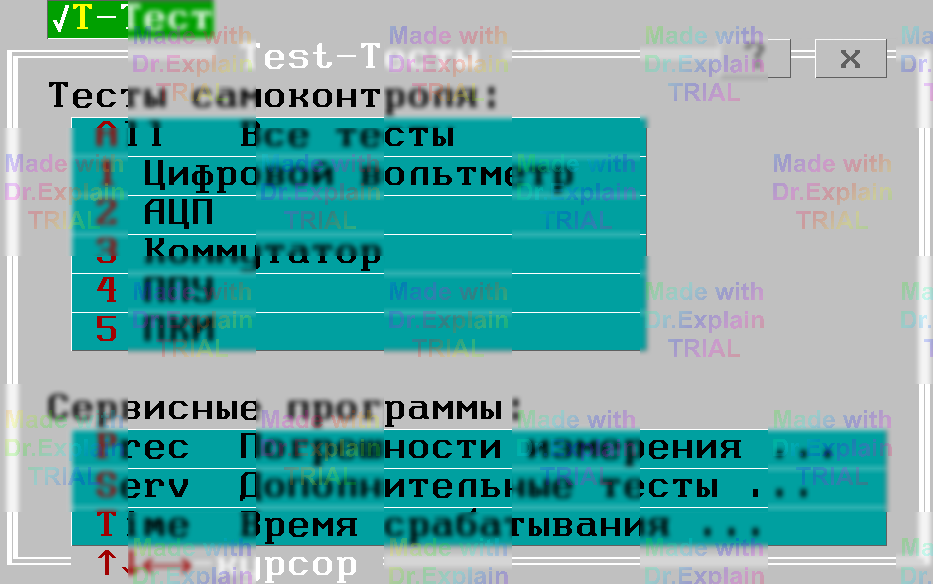

1. Меню Test-Тесты
Команда Alt-T вызывает меню Test-Тесты, показаном на рисунке ниже, с командами вызова тестов самоконтроля, а также меню вызова дополнительных тестов и прочих сервисных функций (утилит) ПОАСК.

Пункт "Все тесты"
Вызывает последовательное выполнение всех тестов самоконтроля (см. п. 2). Режим используется для ускоренной проверки работоспособности АСК перед началом работы. Для теста ПКИ набор резисторов НР-4 должен быть установлен в разъем Х3 первого блока коммутации (далее БК) первой стойки коммутационной (далее СК). Алгоритмы тестов самоконтроля в режиме "Все тесты" модифицируются так, чтобы минимизировать участие оператора при выполнении тестов (то есть, если сбои или неисправности в АСК не обнаружены, то участие оператора не требуется).
Пункт "Погрешности измерения"
Вызывает меню сервисных функций (утилит), предназначенных для метрологической аттестации, а также отладки и настройки АСК (см. п. 4).
Пункт "Дополнительные тесты"
Вызывает меню дополнительных тестов ПОАСК (см. п. 3).
Пункт "Время срабатывания"
Вызывает меню утилит, предназначенных для определения времени срабатывания устройств АСК (см. п. 5).
Прочие пункты меню
Вызывают на выполнение тот или иной тест самоконтроля АСК (см. п. 2).
Действия перед и после выполнения
Перед выполнением и после выполнения каждого теста или утилиты осуществляется сброс АСК в исходное состояние.